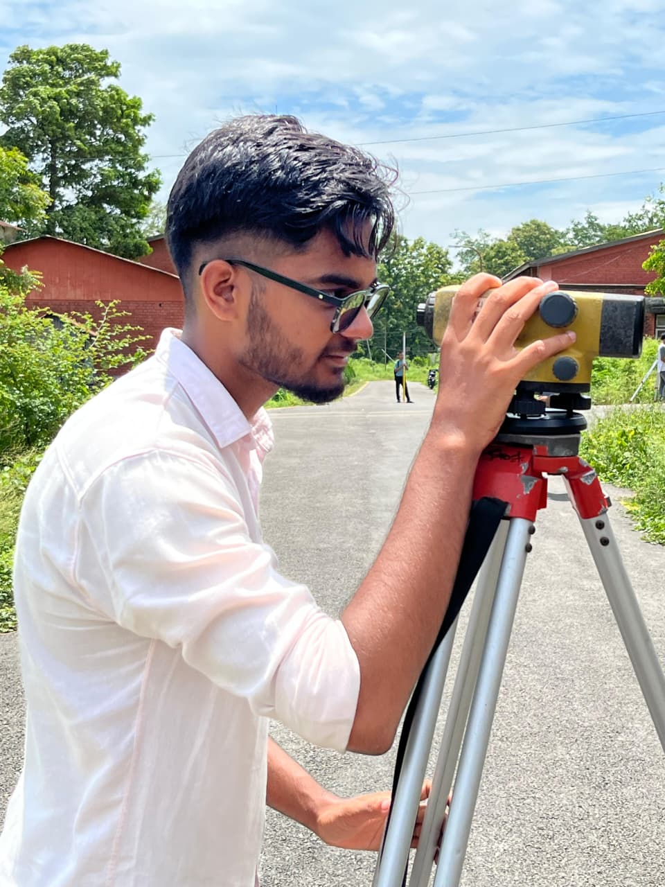

Hi, I'm Sarthak Karn.
I combine technical precision with creative vision to build sustainable infrastructure.

I am a Civil Engineering student with a deep interest in structural design and surveying. My journey is driven by a desire to understand how we can build safer, more efficient, and sustainable infrastructure for the future.
Currently pursuing my Bachelor's at Purwanchal Campus (IOE TU), I am constantly learning and applying new skills to solve real-world engineering challenges.
NOV 2024 - PRESENT
Purwanchal Campus
Dharan-8, Sunsari, Nepal
Regular2024
IOE Entrance Examination
Tribhuvan University
PoU Entrance Examination
Pokhara University
COMPLETED 2024
Triton SS & College
Koteshwor-32, Kathmandu, Nepal
"Completed Grades XI and XII on a top tire merit scholarship"
GPA: 3.52COMPLETED 2022
SEE
GPA: 3.60